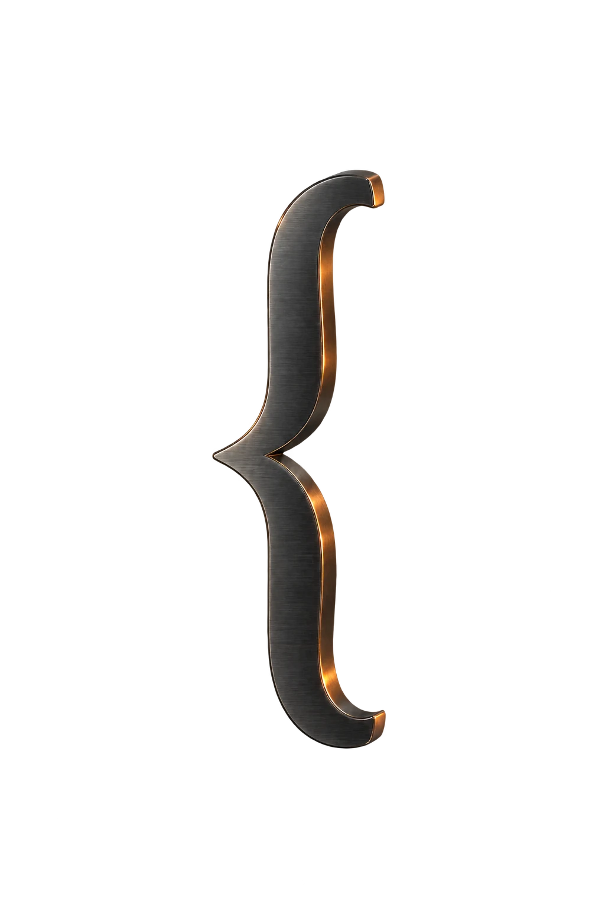

A closer look
at the code.
Supplied code, annotated with care. Follow each selected range and see exactly what the proposed change does.
You, to Brace
Original examples. No code executed or live lint run.
0explanations
prepared
prepared
studio-preview.js
After changes this note. Scroll code →
One change in focus
Read both sides.
The selected source line and its supplied revision stay together. A shorter line is not always the same behavior.
Before · supplied source
After · proposed revision
